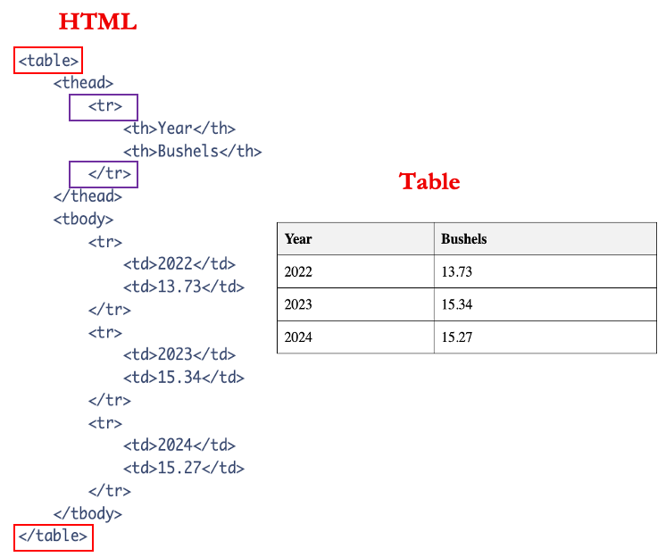

library(readxl) ## Data Extraction --- E
library(dplyr) ## Data Transformation --- T
library(ggplot2) ## Data Visualization --- VSession 1: Introduction To Extraction Workshop - HTML & APIs
Session 1: Introduction to Data Extraction
0. Logisitcs
- CourseKata
- organization of workshop of lecture and questions throughout
1. Goals & Objectives (Presentation)
- Understand the importance of extracting dynamic data (via HTML and APIs) in modern data analysis and teaching
- Learn how to access and work with APIs to retrieve structured, real-time data
- Learn how to bring HTML-based data (e.g., web tables) into R using scraping tools
- Apply these skills through hands-on coding practice and discussion of classroom integration
1.a. Goals for Introduction
(need to place)
2. Conceptual Foundation
P1. My mentor, Allan, says ask good questions…
P2. Statistical Question: Who had the most impactful first season in terms of points: Michael Jordan, LeBron James, or Kobe Bryant?
P3. I recently submitted a manuscript on this exact dataset, so let’s use it as our starting point.
P4. We’ll begin by working with a static Excel file that contains per-game stats for each player’s 15 seasons in the NBA.
P5. Let’s Load the pertinent libraries
T1. ____ Fill in the code (chatgpt)
P6. Load in the data
T2. ____ Fill in the code (chatgpt)
nba_df <- read_xlsx("nba_data.xlsx", sheet = "modern_nba_legends_08302019")P7. Let’s view the data …
T3. Use the
glimpsefunction to view the data
glimpse(nba_df)Rows: 3,400
Columns: 38
$ Name <chr> "MJ", "MJ", "MJ", "MJ", "MJ", "MJ", "MJ", "MJ", "MJ", "M…
$ Season <chr> "season_1", "season_1", "season_1", "season_1", "season_…
$ Game_Location <chr> "Home", "Away", "Home", "Away", "Away", "Away", "Away", …
$ Game_Outcome <chr> "W", "L", "W", "W", "L", "W", "W", "W", "W", "L", "L", "…
$ Point_Margin <dbl> 16, -2, 6, 5, -16, 4, 15, 2, 3, -20, -9, -17, -10, 19, -…
$ Rk <dbl> 1, 2, 3, 4, 5, 6, 7, 8, 9, 10, 11, 12, 13, 14, 15, 16, 1…
$ G <dbl> 1, 2, 3, 4, 5, 6, 7, 8, 9, 10, 11, 12, 13, 14, 15, 16, 1…
$ Date <dttm> 1984-10-26, 1984-10-27, 1984-10-29, 1984-10-30, 1984-11…
$ Age <chr> "21-252", "21-253", "21-255", "21-256", "21-258", "21-26…
$ Tm <chr> "CHI", "CHI", "CHI", "CHI", "CHI", "CHI", "CHI", "CHI", …
$ Opp <chr> "WSB", "MIL", "MIL", "KCK", "DEN", "DET", "NYK", "IND", …
$ GS <dbl> 1, 1, 1, 1, 1, 1, 1, 1, 1, 1, 1, 1, 1, 1, 1, 1, 1, 1, 1,…
$ MP <dbl> 40, 34, 34, 36, 33, 27, 33, 42, 43, 33, 44, 39, 42, 30, …
$ FG <dbl> 5, 8, 13, 8, 7, 9, 15, 9, 18, 12, 4, 11, 11, 9, 10, 6, 9…
$ FGA <dbl> 16, 13, 24, 21, 15, 19, 22, 22, 27, 24, 17, 26, 22, 13, …
$ FG_Percent <dbl> 0.313, 0.615, 0.542, 0.381, 0.467, 0.474, 0.682, 0.409, …
$ `3P` <dbl> 0, 0, 0, 0, 0, 0, 0, 0, 1, 0, 0, 0, 0, 0, 0, 0, 1, 0, 0,…
$ `3PA` <dbl> 0, 0, 0, 0, 0, 0, 0, 0, 1, 1, 0, 3, 0, 0, 1, 0, 1, 0, 0,…
$ `3P_Percent` <dbl> NA, NA, NA, NA, NA, NA, NA, NA, 1, 0, NA, 0, NA, NA, 0, …
$ FT <dbl> 6, 5, 11, 9, 3, 7, 3, 9, 8, 3, 8, 12, 13, 5, 10, 1, 3, 2…
$ FTA <dbl> 7, 5, 13, 9, 4, 9, 4, 12, 11, 3, 8, 16, 14, 6, 10, 1, 4,…
$ FT_Percent <dbl> 0.857, 1.000, 0.846, 1.000, 0.750, 0.778, 0.750, 0.750, …
$ ORB <dbl> 1, 3, 2, 2, 3, 1, 4, 2, 2, 0, 0, 2, 4, 0, 3, 0, 1, 2, 2,…
$ DRB <dbl> 5, 2, 2, 2, 2, 3, 4, 7, 8, 2, 5, 3, 9, 4, 3, 2, 2, 3, 0,…
$ TRB <dbl> 6, 5, 4, 4, 5, 4, 8, 9, 10, 2, 5, 5, 13, 4, 6, 2, 3, 5, …
$ AST <dbl> 7, 5, 5, 5, 5, 3, 5, 4, 4, 2, 7, 2, 2, 3, 8, 3, 2, 5, 3,…
$ STL <dbl> 2, 2, 6, 3, 1, 3, 3, 2, 3, 2, 5, 2, 2, 4, 3, 3, 2, 3, 1,…
$ BLK <dbl> 4, 1, 2, 1, 1, 1, 2, 5, 2, 1, 2, 1, 2, 1, 1, 2, 0, 0, 1,…
$ TOV <dbl> 5, 3, 3, 6, 2, 5, 5, 3, 4, 1, 4, 3, 6, 4, 4, 4, 2, 4, 4,…
$ PF <dbl> 2, 4, 4, 5, 4, 5, 2, 4, 4, 4, 5, 3, 3, 4, 4, 1, 5, 4, 3,…
$ PTS <dbl> 16, 21, 37, 25, 17, 25, 33, 27, 45, 27, 16, 34, 35, 23, …
$ GmSc <dbl> 12.5, 19.4, 32.9, 14.7, 13.2, 14.9, 29.3, 21.2, 37.5, 17…
$ number_game <dbl> 1, 2, 3, 4, 5, 6, 7, 8, 9, 10, 11, 12, 13, 14, 15, 16, 1…
$ DD <dbl> 0, 0, 0, 0, 0, 0, 0, 0, 1, 0, 0, 0, 1, 0, 0, 0, 0, 0, 0,…
$ TD <dbl> 0, 0, 0, 0, 0, 0, 0, 0, 0, 0, 0, 0, 0, 0, 0, 0, 0, 0, 0,…
$ Age_Years <dbl> 21, 21, 21, 21, 21, 21, 21, 21, 21, 21, 21, 21, 21, 21, …
$ Age_Days <dbl> 252, 253, 255, 256, 258, 264, 265, 267, 270, 272, 274, 2…
$ Last_Name <chr> "Jordan", "Jordan", "Jordan", "Jordan", "Jordan", "Jorda…Q1. Look through the data, does it look clean? Discuss amongst Your peers. (chatgpt)
Ans Q1: It is clean the numeric variables are supposed to be numeric and the characrets variables are treated as char (chatgpt)
P8. Now let’s clean the focus on the data frame that we are after
T4. ____ Fill in the code (chatgpt)
season_1_df <- nba_df %>%
filter(Season == "season_1")- P9. Now lets look at a plot of their points (chatgpt)
T5. ____ Fill in the code (chatgpt)
season_1_df %>%
ggplot(aes(x = Name, y = PTS)) +
geom_boxplot() +
theme_bw() Warning: Removed 14 rows containing non-finite outside the scale range
(`stat_boxplot()`).
Note 1: We could have spruced it up but here we just wanted to answer the question, if you have the urge please do so.
Q2. What conclusion could be made (chatgpt)
P10. Now what about, Magic Johnson or Wilt Chamberlain Maybe Luka Dončić or Ja Morant If I wanted to add this data I need to go to the originnal source not an excel sheet to do this (chatgpt)
Note 2: - Shift students from being passive data users to active data seekers - Move beyond the idea of “waiting for clean data” to learning how to access, validate, and clean it themselves - Teach both the skill to extract and the capacity to teach extraction
Note 3: - Why this matters: We as instructors should not just rely on pre-built packages or static datasets. The digital world changes constantly — websites, APIs, and file structures evolve.
Our responsibility: Teach students (and ourselves) how to adapt and access real-world data sources. Equip learners with skills to extract, not just consume pre-extracted content.
Despite the growing importance of live data, most introductory courses still rely heavily on static, pre-cleaned datasets. This limits students’ exposure to the realities of modern data work.
Key idea: Flat files can still be dynamic depending on how they’re maintained — but we use the term “dynamic” here to emphasize external, real-time data access through APIs and web scraping.
The availability of dynamic, frequently updated data — especially via web APIs — has grown exponentially in recent years. This shift demands new strategies in how we teach data access.
2.a. Static Files or Sources Extraction
P11.
Examples: CSV, Excel files
Typically unchanging unless manually edited
Often pre-loaded into classroom activities
May still require cleaning (e.g., column names, missing data)
Note 4: Messy data is not always a bad thing
2.b. Dynamic Sources Extraction
P12.
Definition: Data sources that update over time or are externally controlled (i.e., you don’t own the source)
P13.
Two primary types:
- Application Programming Interface APIs – Designed to serve structured data upon request (e.g., player stats, weather)
- Hypertext Markup Language HTML/Web Pages – Seen as dynamic when content changes (especially sports, news, etc.)
HTML pages are primarily designed for human readability, while APIs are designed for structured machine access. Both offer pathways to dynamic data, each with different advantages and challenges.
Bridging the gap between classroom exercises and real-world data practice requires that students learn not just how to analyze data — but how to find it, extract it, and prepare it themselves.
Note 5: HTML can be treated as static or dynamic depending on how frequently the page updates. For this workshop, we treat HTML as dynamic, especially for sports data.
2.c. What are Web APIs?
Note 6:
- There are many kinds of APIs, but in this workshop, we’ll focus specifically on web APIs — tools designed to let us request and retrieve data from online sources.
- In R, we’ll act like a piece of software making those requests, allowing us to access live data programmatically.

P14.
API stand for Application Programming Interfaces
It is a way for software to communicate with one another
One way it work is that it allow programs to request data directly from external servers in a structured format (most often JSON).
{
"player": "LeBron James",
"points": 27.1,
"team": "Lakers"
}- The keys are
players,pointsandteam - The values for the corresponding keys are
LeBron James,27.1,Lakers
Note 7:
- There are a lot of acronyms
- JSON - Java Script Object Notation - javascript is web developing software (chatgpt)
Q3. What does JSON? Answer: Java script object notation
Note 8:
Describe Image
Flow of Data via API (vrogue.co)A user sends a request via the internet → the API talks to the server → the server queries the database → the API responds with data, often as JSON.
P15.
Learning to work with web APIs teaches students more than just how to extract data — it gives them the tools to:
- Locate relevant APIs (e.g., weather, sports, music)
- Construct and test their own API requests
- Interpret JSON responses (including nested structures)
- Transform the results into tidy formats ready for analysis
P16
APIs aren’t just technical tools, they’re increasingly the primary way to access and query data stored in external databases.
In today’s fast-changing digital environment, students must be equipped to retrieve and work with information from live, external sources, not just rely on pre-cleaned datasets.
Note 9:
This is what pushes students from passive observers of data to active agents in its collection, structure, and use. It aligns closely with what real-world data science jobs require, especially when you’re no longer just analyzing data, but acquiring it.

The use of APIs requires keys, which are unique and secret codes that are used to authorize your request and identify your user and billing information. Consequently, keeping these codes secret is imperative. To do so, store API keys in environment files which reside on your computer, and not coded into variables or available in plain text on your working files.
show images creating an app (provide my youtube video) - get id and secret (blurr it out) (make highlighe secret and ID on image )
[
id: (eman post in some way) secret: (eman post on screen)
Note 10: Note all APIs website work the same, getting experience with 1-2, you start to develop a philosophy on how to approach them (chatgpt)
Code 2
Step 1: Load the Required Packages
library(spotifyr)
library(dplyr)Step 2: Set Up Credentials
Before using the Spotify API, you need to create an app on the and retrieve your Client ID and Client Secret. (I have a video here to do this on your own but on the screen, you can see the id and secret - (chatgpt))How to make app
# Replace these with your actual credentials (do NOT share them publicly)
client_id <- 'your_spotify_client_id_here'
client_secret <- 'your_spotify_client_secret_here'Step 3: Get an Access Token
The token allows Spotify to recognize both who you are and what you’re requesting.
access_token <- get_spotify_access_token(
client_id = client_id,
client_secret = client_secret
)Step 4: Request Artist Data
Now that you’re authenticated, you can request track-level data from Spotify’s API.
beatles_df <- get_artist_audio_features('the beatles')Step 5: Explore the Dataset
Use glimpse() to quickly examine the structure of the data.
glimpse(beatles_df)Step 6: Try Another Artist
Try retrieving audio features for a different artist.
taylor_df <- get_artist_audio_features('taylor swift')
glimpse(taylor_df)Note 11: How databases and access can change in that the developers may change access or change the way you access information so you have to be aware of this. (chatgpt)
Data types are usually sotred correctly as chars or numerics so noy much cleaning required (chatgpt)
2.d. What is Web Scraping?

- P17
Websites are designed using Hypertext Markup Language (HTML) to display information, (chatgpt: say better)
Information stored as tables are ideal within a HTML page (chatgpt: say more)
Note 12: - we do not want to just copy and paste a table into a csv format it then clearn it up again in R, ideally we want to have access to and bring it into R (chatgpt: say better)
- P18:
Below is an image of code for html table and the actual table that it would produce
{width=“200”, height = “1000”}
- Note 13:
- Highlight the following concepts:
- beginning and the end of table
- the column name
- each Row
- How it translate into a human readable table
- Emphasize that we’re only focusing on
<table>tags for this workshop
- Highlight the following concepts:
- P19.
Now lets see one of the libraries that allows us to scrape in R
library(htmltab)Note 14: Lets go to the url via webbroswer
url <- "https://en.wikipedia.org/wiki/List_of_counties_in_Iowa"P20.
This function requires 2 args url and table number we can guess at it and may work
iowa_state_counties_df <- htmltab(url,1)iowa_state_counties_df <- htmltab(url,2)Note 15:
Unless you know html and want to look at the source code or you what exactly a table looks like you will have to guess sometimes
We can get the warning to go away by …
P21.
This is what I would call static because the counties are note changeing but if we wanted baseball data at which currently everyday new data is displayed it is ideal that we have a more robust method of fgetting this data rather using htmltabs
- P22.
Check out article: Web Scraping in the Statistics and Data Science Curriculum: Challenges and Opportunities - Mine Dogucu & Mine Çetinkaya-Rundel
- P23.
- Much like APIs, lots of relevant and useful information is available directly on webpages, which are readable by humans rather than APIs which are designed for machine access.
- By learning this skill, students are able to:
- Locate relevant sources (e.g., sports data from Pro Football Reference)
- Understand how websites deliver and organize content
- Transform and clean data for analysis and visualization
- Often times, HTML tables contain unexpected structures or data types (images, links, etc) and can present a challenge that develops not only data cleaning skills, but intention, planning, and adaptability when handling and analyzing difficult data.
2.e. Workshop Agenda
Session 1: Introduction
This session serves as a discussion of the principles and reasoning behind learning these concepts and how they can benefit the classroom.
Session 2: Getting Weather Data via OpenWeather API
In this session, we dive into OpenWeather API and learn to use packages like httr2 to execute API calls. We will also discuss URLs, queries, data structures, and more.
Session 3: Scraping NFL Sports Data
In this session, we will use Pro-Football Reference to learn how to extract and clean HTML table data for use in statistical analysis and visualizations.
Session 4: Putting it All Together (Project)
In this project, we will use HTML scraping joined with the OpenWeather API to create our own cloropleth map of Iowa.

3. Hands-On Coding Activity (chatgpt: make it)
Goal: Engage participants in applying both API and HTML extraction methods.
Part A: API
Use a new function from the
spotifyrpackageCreate a simple plot using the data
Ask comprehension questions:
- How does this differ from static file use?
- What’s confusing about working with API responses?
Part B: HTML
Extract state-specific data from a chosen Wikipedia page
Guide participants through cleaning it (if time allows)
Ask guiding questions:
- Did the table number match what you expected?
- What challenges did you face?
- (Example prompt written on the board: “Not every state’s table is the same.”)
4. Reflection (make questions within CourseKata to solidyfy approach)
- What did we learn?
- How does this connect to the original Goals & Objectives of the session?
- How do you see yourself using this in your classroom?
- What kinds of APIs or HTML sources would be most relevant for your students?
5. Misc. Questions/Ideas
- Set expectations and workshop goals
- Why data extraction matters: relevance to real-world education
- Overview of the layout / table of contents
- Discuss libraries used (tidyverse, rvest, httr, etc.)
- Best practices (e.g., avoiding hardcoding, consistent comments)
- Adapting to changing APIs/websites
- Anecdote: Spotify example of lost API access
- Explain tidy data: snake_case column names, correct data types
- Emphasize code flexibility — developers can change APIs overnight
- Activity: Scaffolding + Code review using example(s)